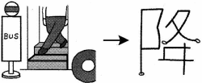

GIÁNG - Xuống, rơi
- kanji :
- 降
- Âm Hán Việt:
- GIÁNG
- On
- コウ
- Kun:
- ふ -る
お -りる
|  | Bạn xuống bus You get off at the bus stop. そのバス停ていで 降おります。 |
|
|
Bộ: 阝- 夂 - ヰ
|
Từ trên đồi 阝-, bước chầm chậm 夂 bàn chân ヰXUỐNG phụ - tuy - ヰ hình bàn chân |
||
|
|
||